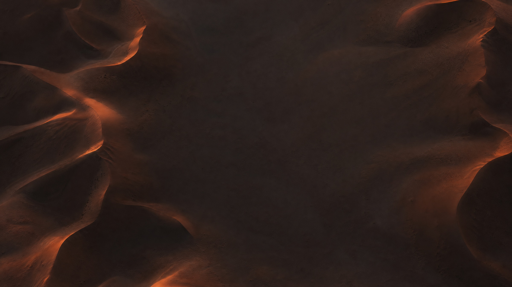

free and open source · 37 pointers
A tiny hand for your Mac.
It points at things on your screen. Click to tap. Hold and drag to draw.
Version 1.0.1 · macOS 13 or later · Apple silicon and Intel
Point
The hand follows your mouse.
Tap
Clicks make a soft tap.
Draw
Lines fade after 3 seconds.
⌃⌥H turns it on or off. ⌃⌥X clears the drawing.